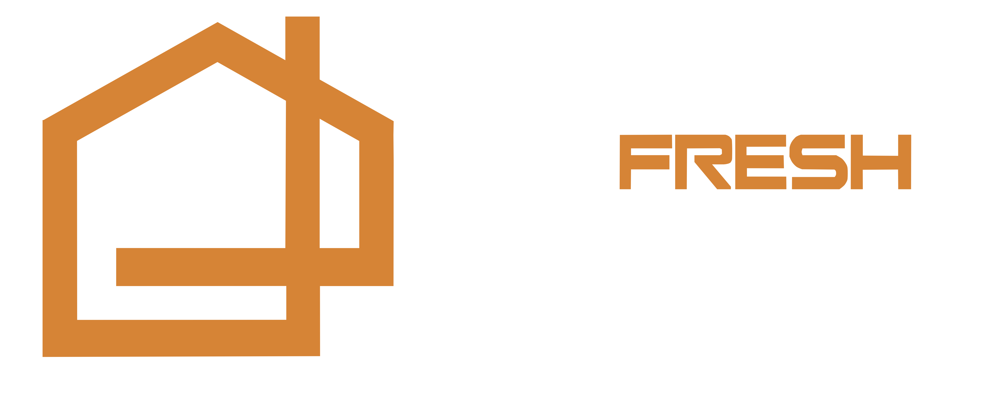
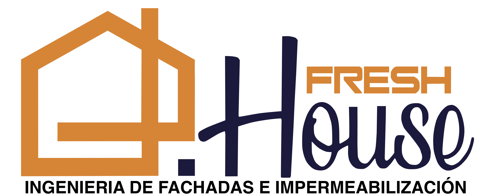

Obra civil
de fachada
KOA — lavado y eliminación de hongos, resane de recubrimiento, pintura impermeabilizante Koraza Pro 550 y sello de ventanería con polímero híbrido Multibond.
Freshouse: ingeniería de fachadas, no un contratista más
Freshouse S.A.S. es una empresa de ingeniería con sede en Armenia, dedicada exclusivamente a la intervención técnica de la envolvente de edificaciones: fachadas, impermeabilización y cubiertas.
Cada propuesta parte de un diagnóstico real del edificio — atacamos la causa del deterioro, no solamente el síntoma.
Equipo de nómina directa, con seguridad social y certificación de trabajo en alturas al día. Materiales con respaldo de fábrica y garantía ejecutable porque cada obra queda documentada.
Proyectos y clientes

Contexto del proyecto
KOA solicitó a Freshouse una obra civil de intervención integral en su fachada, que hoy presenta suciedad generalizada, hongos, material que perdió su vida útil, desprendimientos puntuales, fisuras y deterioro en el sello de ventanería.
Freshouse realizó la inspección técnica en sitio y el análisis de patologías del sistema de recubrimiento, el sustrato y la carpintería/ventanería de la envolvente.
La propuesta se plantea como una intervención integral: lavado y eliminación de hongos, pintura impermeabilizante Koraza Pro 550 y resello de ventanería — con sistemas Pintuco y respaldo técnico.
Diagnóstico — estado actual de la fachada
Inspección técnica en sitio y análisis de patologías de la fachada de KOA, evaluando el sistema de recubrimiento, el sustrato y el sello de ventanería.
Proceso de intervención
Presupuesto de obra
| ÍTEM | DESCRIPCIÓN Y ESPECIFICACIÓN TÉCNICA | UND | CANT. | VR. UNIT. | VALOR |
|---|---|---|---|---|---|
| 1 | PRELIMINARES DE OBRA | $ 2.600.000 | |||
| 1.1 | Construcción de campamento provisional de obra Campamento provisional que garantiza la seguridad de materiales y personal. | GL | 1,00 | $ 1.550.000 | $ 1.550.000 |
| 1.2 | Señalización de obra — señalización y SISO Cintas, avisos y acompañamiento permanente de profesional SISO, conforme al SG-SST. | GL | 1,00 | $ 1.050.000 | $ 1.050.000 |
| 2 | LAVADO Y PREPARACIÓN DE SUPERFICIE | $ 61.603.703 | |||
| 2.1 | Lavado de superficies con hongos y material desprendido Hidrolavadora industrial 1.880 psi + hipoclorito al 10%. Incluye retiro de material desprendido. | M² | 5.258,80 | $ 4.800 | $ 25.242.240 |
| 2.2 | Resane de zonas puntuales del recubrimiento (Graniplast) Análisis previo para integrar la zona reparada al acabado existente — 15% del área total. | M² | 684,26 | $ 41.800 | $ 28.602.068 |
| 2.3 | Reposición de morteros desprendidos Remoción y reemplazo con mortero de reparación impermeabilizado. | M² | 136,85 | $ 56.700 | $ 7.759.395 |
| 3 | PINTURA DE FACHADA | $ 103.186.333 | |||
| 3.1 | Suministro y aplicación de Koraza Pro 550 — 2 manos Alta resistencia a la intemperie y rayos UV. Garantía Pintuco 5 años. | M² | 4.561,73 | $ 22.620 | $ 103.186.333 |
| 4 | SELLO DE VENTANERÍA | $ 17.746.300 | |||
| 4.1 | Sello de juntas con polímero Multibond Retiro y reposición del sello existente. Incluye puertas de balcones. | ML | 2.087,80 | $ 8.500 | $ 17.746.300 |
| 5 | TERMINADO / LIMPIEZA | $ 3.600.000 | |||
| 5.1 | Aseo general y limpieza — entrega a satisfacción La obra queda libre de escombros y residuos de las actividades del contrato. | GLB | 1,00 | $ 3.600.000 | $ 3.600.000 |
Condiciones comerciales y garantías
Por qué elegir Freshouse

Gracias por
su atención
Con este proyecto, Freshouse asume el compromiso de devolverle a la fachada de KOA su impermeabilidad, su acabado y el valor patrimonial que merece, con el respaldo técnico de Pintuco.
310 461 7353 · gerencia@freshouse.com.co